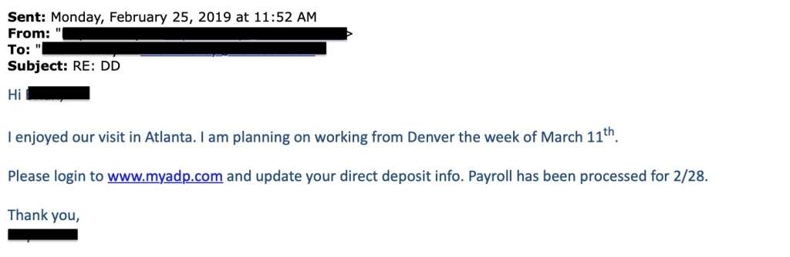

Data Pribadi
Apa Itu Data Pribadi?
- Data pribadi adalah informasi yang dapat digunakan untuk mengidentifikasi atau menghubungi seseorang secara spesifik.
- Contoh data pribadi adalah:
- Nama lengkap
- Alamat lengkap
- Nomor identifikasi seperti nomor induk pada KTP, KK, Kartu pelajar, paspor, dsb.
- Nomor telepon
- Alamat email
- Tempat, tanggal, bulan, dan tahun lahir
- Nama gadis ibu kandung
- Umumnya, untuk melacak identitas seseorang, satu data pribadi akan dihubungkan dengan data pribadi lain.
- Contoh:
- Albert dan Budi adalah teman bermaingame online. Suatu hari, mereka sepakat untuk maining game bersama di rumah Budi. Untuk itu, Albert memerlukan beberapa informasi supaya bisa mengetahui dimana letak rumah Budi.
- Ketika Albert hanya memiliki informasi seperti ini: Saya punya teman, namanya Budi, tinggal di Jakarta. Maka Albert akan kesulitan untuk mengetahui letak rumah Budi.
- Namun, ketika Albert memiliki informasi seperti ini: Saya punya teman namanya Budi Man Putera McKinsey, tinggal sekitar Pancoran Timur, digang dibelakang Indomaret, dan diakuliah di Universitas Sampoerna. Maka akan lebih mudah bagi Albert untuk mengetahui letak rumah Budi.
Mengapa Data Pribadi Harus Dijaga
- Data pribadi harus dijaga karena jika tidak, orang lain dapat menggunakan identitas kita untuk daftar kepinjaman online dan/atau aplikasi kartu kredit dan membeli barang di toko online dengan identitas kita (Nomor KTP, No. Telpon, Alamat Rumah, Nama Gadis Ibu Kandung, NPWP, Slip Gaji, Nomor Kartu Kredit, Password Perbankan, dll).
- Pihak yang tak bertanggungjawab dapat membuat sebuah akun Clone atau akun yang meniru akun kita yang asli, mulai dari nama, foto profil, foto sampul, post, unggahan foto dan video, dsb. untuk merugikan kerabat dan keluarga kita.
- Pencuri identitas dapat menipu orang lain atas nama kita. Terutama apabila kita sudah memiliki suatu reputasi dibidang tertentu, maka pencurian identitas akan sangat berpengaruh pada reputasi yang sudah kita bangun.
Apa yang terjadi ketika kita gagal melindungi Data Pribadi kita?
- Orang lain dapat menggunakan identitas kita untuk daftar ke pinjaman online dan/atau aplikasi kartu kredit dan membeli barang di toko online dengan identitas kita (Nomor KTP, No. Telpon, Alamat Rumah, Nama Gadis Ibu Kandung, NPWP, Slip Gaji, Nomor Kartu Kredit, Password Perbankan, dll).
- Pihak yang tak bertanggungjawab dapat membuat sebuah akun Clone atau akun yang meniru akun kita yang asli, mulai dari nama, foto profil, foto sampul, post, unggahan foto dan video, dsb. untuk merugikan kerabat dan keluarga kita.
- Pencuri identitas dapat menipu orang lain atas nama kita. Terutama apabila kita sudah memiliki suatu reputasi dibidang tertentu, maka pencurian identitas akan sangat berpengaruh pada reputasi yang sudah kita bangun.
Bagaimana orang dapat memperoleh Data Pribadi kita?
- Hacking/peretasan yang dilakukan orang ke perusahaan atau aplikasi yang memiliki Data Pribadi kita.
- Phishing: kerugian yang didapat dari Phishing biasanya Data Pribadi kita akan dicuri dan disalahgunakan oleh pihak yang tidak bertanggungjawab. Untuk menghindari phisihng:
- Selalu cek alamat URL/domain website yang kalian kunjungi, biasanya Web Phising akan menggunakan domain yang terkesan jelek atau murah. Pastikan juga setiap halaman web yang kalian kunjungi memiliki sertifikat “https” pada alamat URL nya.
- Link asli: https://www.facebook.com/
- Link phising: http://new-f4c3b00k2024.areyouready.es/
- Jangan pernah klik link yang berasal dari sumber yang tidak jelas.
- Selalu perhatikan pengirim e-mail dan jangan pernah klik e-mail yang mencurigakan.
Sumber gambar: https://www.addictive.net.au/7-tips-for-spotting-a-phishing-email
- Social Engineering:
- Pretexting, dimana pelaku berpura-pura menjadi pihak yang sah. Contoh: Sebuah email dari john.googlesupertechteam@gmail.com mengaku akun Google yang kalian miliki tidak aman karena Google sedang melakukan perbaikan server besar-besaran di area Asia Tenggara. Lalu si pengirim meminta e-mail, password, dan nomor telepon kalian supaya akun kalian tidak hilang semasa perbaikan. 
- Baiting, dimana pelaku memancing korban dengan iming-iming sesuatu yang korban inginkan. Contoh:
- Link Phishing berjudul Genshin Impact Primogems Tool Hack 2024 100% Work.
- Laman web virus berjudul Free iPhone 15 Pro.
- Laman Phishing berjudul Easy 1K Youtube Subscribers and 5K Followers only with Two Clicks! 2024 Unpatched Glitch!
- Quid Pro Quo, artinya “sesuatu untuk sesuatu” dalam Bahasa Latin. Quid Pro Quo adalah ketika pelaku menjanjikan korbannya sebuah bantuan dengan imbalan informasi atau benefit lainnya sebagai gantinya. contoh:
- Pinjam akun media sosialmu sebentar, nanti saya bayar satu juta Rupiah
- Berikan akses login ke akun mu supaya tim IT Support kami dapat melindungi akun ada supaya lebih aman
Sumber gambar:
Sumber gambar: https://www.dummies.com/article/technology/cybersecurity/types-of-social-engineering-attacks-266350/
Pastikan untuk berpikir sebelum membagikan. Jangan pernah percaya sesuatu seperti: “Fitur IG Terbaru nih guys! Ternyata kalo kita ketik password kita di kolom komentar, nanti bakal ke-sensor kayak gini, lho! ********** Coba deh guys!”